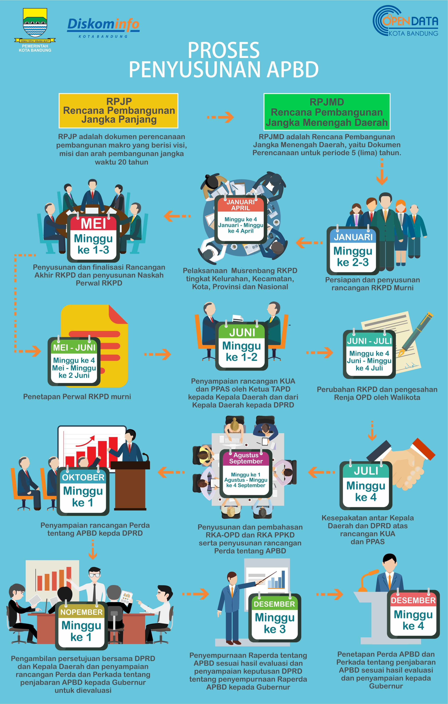

Portal APBD Kota Bandung adalah sebuah portal dimana masyarakat bisa melihat, memantau sekaligus mengawal anggaran yang digunakan oleh Pemerintah Kota Bandung. Seluruh konten data dalam portal ini sudah sesuai dengan lampiran Peraturan Daerah Kota Bandung tentang APBD Kota Bandung. Selain itu, data-data yang disajikan dalam portal ini juga merupakan data terbuka yang dapat secara bebas digunakan oleh masyarakat dengan syarat mencantumkan izin/sumber data/informasi. Jika masih membutuhkan informasi lebih lanjut, Anda dapat menghubungi PPID Kota Bandung dan mengikuti proses permohonan informasi sesuai dengan kententuan perundang undangan yang berlaku. Jika memiliki kritik dan saran terkait APBD Kota Bandung atau pembangunan Kota Bandung secara umum, Anda dapat berpartisipasi dengan memanfaatkan kanal LAPOR!.
Berdasarkan Peraturan Menteri Dalam Negeri No.54 Tahun 2010 tentang Pelaksanaan Peraturan Pemerintah No.8 tahun 2008 tentang Tahapan, Tata Cara Penyusunan, Pengendalian dan Evaluasi Pelaksanaan Rencana Pembangunan Daerah adalah sebagai berikut
